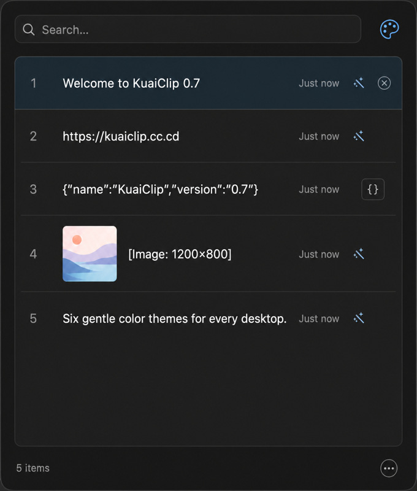
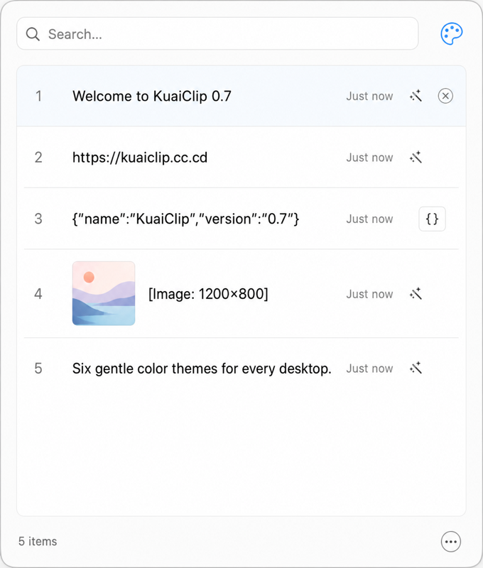
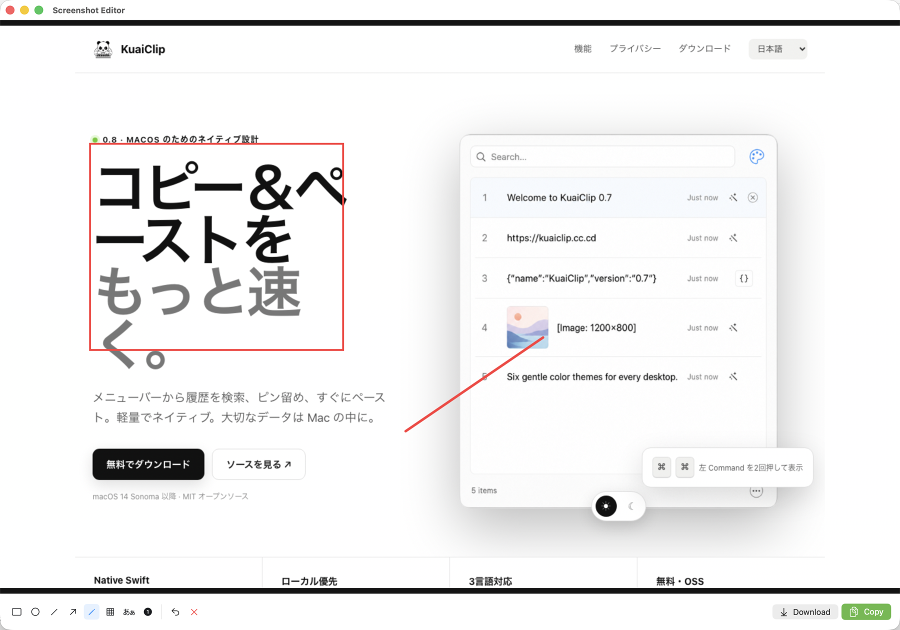

--search
瞬间找到
输入即筛选。文本、链接、文件路径和图片，都能快速回到手边。
swift/macOS 14+/MIT
在菜单栏中搜索、固定并快速粘贴剪贴板历史。原生 Swift 编写，数据只留在你的 Mac 上。
$ git clone https://github.com/ych0537/KuaiClip.git


// features
--search
输入即筛选。文本、链接、文件路径和图片，都能快速回到手边。
--keyboard
方向键选择，Enter 复制，Option + Enter 直接粘贴。工作流无需离开键盘。
--ai-polish
只对自然语言显示润色按钮；命令、URL、代码与结构化数据不会被打扰。
--pin
固定最多 10 条常用片段，以 A–J 快捷键随时取用。
--json
自动识别有效 JSON，一键格式化、复制并保存到剪贴板历史。
--ocr
使用 Apple Vision 在本机提取图片中的文字，原图不上传。
--theme
白色、浅蓝、薄荷绿、暖米色、淡紫与黑色主题，一键循环切换。
--screenshot
截取区域、窗口或全屏，添加图形、箭头、画笔、马赛克、文字和编号，再保存或复制。

// keymap
| ⌘ ⌘ | 呼出剪贴板历史（双击左 Command） |
| ↑ ↓ | 选择条目 |
| ↵ | 复制到剪贴板 |
| ⌥ ↵ | 直接粘贴到当前应用 |
| A–J | 取用固定的片段 |
# ~/.config/kuaiclip — privacy defaults { "telemetry": false, "history": "local", "ai": "on-demand", "api_keys": "keychain", "ocr": "on-device", "open_source": true }
// also by the same developer
KuaiPop
选中文字，一键翻译・润色・ToDo
在任意应用中选中文字，旁边立刻弹出图标条。结果直接显示在原文下方，不打断你的工作。
macOS 13 及更高版本 · 免费 · MIT 开源
$ open KuaiClip.app
↓下载最新版macOS 14 Sonoma 及更高版本 · 免费 · MIT 开源